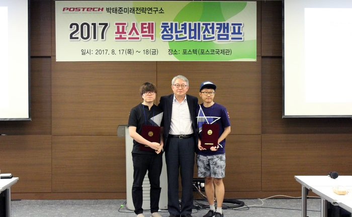

Q 공모전에 참가하게 된 계기가 무엇인가요?
저는 개인적으로 POSTECH과 중학생 때부터 인연이 있었기에 포스텍에서 주최하는 다양한 행사에 관심이 많았는데, 특히 평소에 종종 고민해보았던 시민의식과 관련된 에세이 공모전이 열린다고 하여 고등학교 동창인 현태와 함께 공모전에 참가하게 되었습니다.
Q 에세이라는 다소 낯선 형식과 주제에 접근하기 위해 아이디어를 어떻게 얻으셨나요?
시민의식을 진단하고 대안을 마련하는 것이 저희가 해야 할 일이기에, '우리 사회에서 성숙한 시민의식이 가장 시급하게 요구되는 영역은 무엇일까'라는 질문에 집중했습니다. 그리고 오랜 고민 끝에, 우리의 '언어'에서 그 답을 찾을 수 있다는 결론에 도달했습니다. 또한 글을 쓰는 과정에서는 저희의 표현 방식이 '에세이'라는 점을 고려하여, 저희의 생각을 진솔하게 담아내면서도 글의 흐름이 끊기지 않도록 하기 위해 노력하였습니다.
Q 작품 설명을 부탁드립니다.
<우리의 언어에 존중이 있는가>는 일상에서 사용되는 언어에 대한 에세이입니다. 차별과 갈등 그리고 폄하를 담은 어휘나 표현들은 특정 집단에게 큰 상처로 다가올 수 있고, 나아가 우리의 시민의식 전체의 성숙을 저해할 수도 있습니다. 그러나 안타깝게도 우리 사회 곳곳에서는 고위층의 막말 논란, 소수자를 비하하는 어휘의 사용 등이 끊이질 않고 있습니다. 저희는 한국 사회에서 사용되는 언어가 가지는 문제점을 체계화하고자 했고, 우리의 언어가 보다 성숙해지기 위해서는 어떠안 대안들이 필요한지 구체적으로 제시하고자 했습니다. 특히 이제까지 시도되었던 진부하고 형식적인 대안이 아닌, 보다 실질적으로 언어에서의 시민의식을 성장시킬 수 있는 대안을 제시하고자 노력하였습니다.
Q 수상한 소감은 어떠한가?
(에세이를 쓰는 것 뿐 아니라 발표 및 토론도 하셨는데요. 어떻게 준비하셨고 소감은 어떤지 적어주세요)
1박 2일 동안 청년비전캠프를 통해 좋은 분들과 함께 뜻깊은 시간을 보낼 수 있었던 것도 정말 감사한 일인데, 이렇게 큰 상을 받게 되어 영광이라는 말씀을 먼저 드리고 싶습니다. 발표 시간이 5분으로 무척 짧다는 것을 감안하여, 지나치게 많은 내용을 담으려 하기보다는 저희의 이야기를 솔직하게 풀어내고자 했는데 그 점이 좋은 결과로 이어지지 않았나 싶습니다. 또한 다른 참가자 분들의 발표를 경청하면서 더 나은 시민사회를 만들기 위한 의미있는 질문을 드리려고 노력했는데, 실제로 현장에서 토론이 원활히 진행된 것 같아 기쁩니다. 마지막으로, 이 글을 보고 계신 분들께서는 좋은 글과 멋진 토론으로 우리 사회의 내일을 밝혀주실 수 있으리라 믿습니다.
<左 노현태, 右 유용재>
